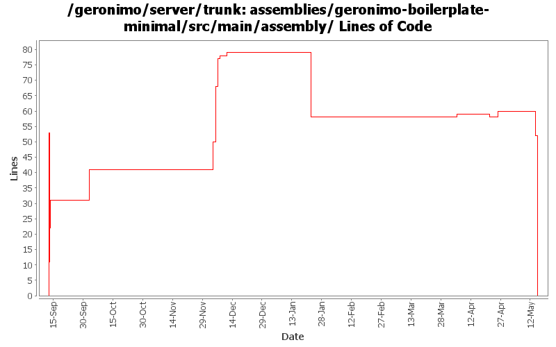

[root]/assemblies/geronimo-boilerplate-minimal/src/main/assembly

| Author | Changes | Lines of Code | Lines per Change |
|---|---|---|---|
| Totals | 20 (100.0%) | 204 (100.0%) | 10.2 |
| jdillon | 10 (50.0%) | 114 (55.9%) | 11.4 |
| djencks | 3 (15.0%) | 42 (20.6%) | 14.0 |
| jbohn | 3 (15.0%) | 36 (17.6%) | 12.0 |
| gdamour | 2 (10.0%) | 10 (4.9%) | 5.0 |
| jlaskowski | 1 (5.0%) | 1 (0.5%) | 1.0 |
| gawor | 1 (5.0%) | 1 (0.5%) | 1.0 |
Drop -minimal suffix on the boilerplate, since we only have one of these now, the suffix is meaningless
0 lines of code changed in 1 file:
Tidy up bits which should be in the repo
0 lines of code changed in 1 file:
(GERONIMO-3985) Use SLF4J as the primary logging facade for Geronimo
3 lines of code changed in 1 file:
(GERONIMO-3977) Use gmaven's ant 1.7.0 libraries which are compatible with Groovy and Windows
0 lines of code changed in 1 file:
*** Definition of annotations streamlining the definition of GBeanInfos.
* @GBean: optional annotation defining the name and j2eeType of a GBean.
If this annotation is not specified, then the default name is assumed to be
the class (simple) name and the default j2eeType is GBean.
* @Priority: optionalannotation defining the priority of a GBean.
* @ParamSpecial: annotation defining a GBean special attribute to be
injected.
* @ParamAttribute: annotation defining the GBean attribute to be injected.
* @ParamReference: annotation defining the GBean reference to be injected.
* @Persistent: annotation for setter methods turning the corresponding GBean
attributes into persistent attributes.
* @Reference: annotation for setter methods turning the corresponding GBean
attribute into a GBean reference.
Note that at most one constructor must be annotated with @ParamSpecial,
@ParamAttribute or @ParamReference.
*** Add a GBeanInfo factory strategy, GBeanInfoFactory, which allows us to
plug-in an annotation based GBeanInfo factory implementation.
*** Use annotation based GBeanInfo declaration for clustering related GBeans.
*** Use xbean-reflect to build GBean instances.
This fixes GERONIMO-3952 - Definition of GBeanInfo via annotations
1 lines of code changed in 1 file:
GERONIMO-3924 Make car-maven-plugin have a server-assembly packaging with lifecycle that avoids need for tools-maven-plugin
12 lines of code changed in 1 file:
(GERONIMO-3747) Moved muck from components/* to more appropriate locations
1 lines of code changed in 1 file:
(GERONIMO-3747) Fixed parentage of module groups, though most still need to have their modules put into the proper groupId
Updated groupId of *everything* under framework/** to org.apache.geronimo.framework, and did my best to update all references
23 lines of code changed in 1 file:
add plexus-archiver to the classpath for deployer (GERONIMO-3690)
1 lines of code changed in 1 file:
GERONIMO-3607 cleanup, reduce size of boilerplate plugin by using repo instead
15 lines of code changed in 1 file:
add deployer.jar back into /bin for all assemblies - it was inadvertantly removed with an earlier change
9 lines of code changed in 1 file:
include jsr88-deploymentfactory.jar in /lib and client.jar in /bin again to get tck tests passing again. These were removed from assemblies with rev. 601152. djencks - I hope this is ok ... I'm sure you will let me know if it is not ;-)
18 lines of code changed in 1 file:
Add a couple of gshell commands to simplify the remote control of servers.
The commands being added are:
* alias: used to alias a commond along with some options and arguments.
etc/layout.xml provides a first aliasing mechanism: a hierarchical name is
mapped to a command. alias suplements this first aliasing mechanism with the
ability to alias a command along with its typical options and arguments.
* unalias: to remove an alias
* execute-alias: to execute an alias
* remote/rsh to start an rsh client
* remote/rsh-server to start an rsh-server
* remote-control/server-control to control a server
Samples for the aliasing commands:
// create the alias 'st' for the quoted command
> alias st 'geronimo/start-server -G server.name=yellow -D property=value'
// execute the alias 'st'. This executes the command in quote above
> excute-alias st
// display defined aliases
> alias
// remove the alias 'st'
> unalias st
Samples for the remote server control commands:
// start an rsh-server:
> remote/rsh-server tcp://localhost:9999
// remote 'start' the server 'defaultServer'
> remote-control/server-control start defaultServer
// remote 'stop' the server 'defaultServer'
> remote-control/server-control stop defaultServer
All the commands are implemented in Groovy. XML manipulations are done via
XmlSlurpers.
Aliases are stored in a configuration file located by default in
etc/aliases.xml
Server configurations, used by the remote control command, are stored in a
configuration file located by default in
etc/server-configuration.xml
New JARs are being added to lib/gshell for the support of the rsh bits.
9 lines of code changed in 1 file:
GERONIMO-3588 Upgrade XStream to 1.2.2
1 lines of code changed in 1 file:
GERONIMO-3496 assemble servers out of plugins
15 lines of code changed in 1 file:
I'm sure this isn't correct but it at least makes it around the yoko endorsed dir problem and start the javaee5 servers again. When I tried this same change in the boilderplate-javaee5 assembly the files were never added .... so I put them in minimal as I saw jdillon do earlier
9 lines of code changed in 1 file:
Fix up some more assembly issues for using gsh
19 lines of code changed in 1 file:
Fixed things up so that the framework assembly can boot up
11 lines of code changed in 1 file:
Tidy up
4 lines of code changed in 1 file:
Update the minimal boilerplate to install gshell bits, and use the assembly plugin to facilitate more of the dirty work
53 lines of code changed in 1 file: